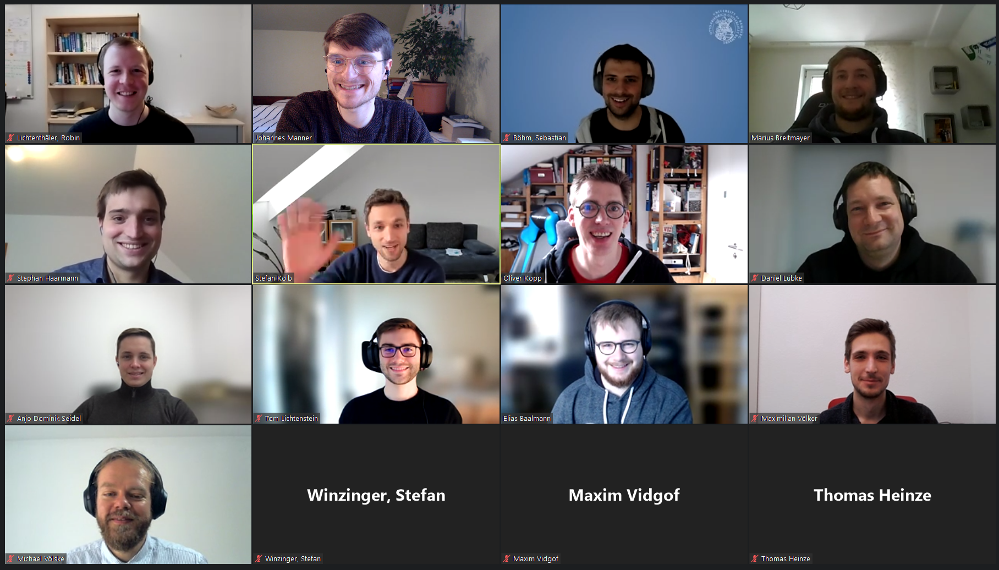

ZEUS Workshop 2023
February 16-February 17, 2023, Hannover, Germany
Program
Thursday, February 16, 2022
- 09:30 Registration & Welcome
- 10:30 Paper Session I - BPMN
Daniel Lübke and Volker Stiehl.
Model Reader Preferences for Semantically Duplicate Elements in BPMN
Yusuf Kirikkayis, Florian Gallik and Manfred Reichert.
Enhancing BPMN 2.0 with IoT Modeling Aspects: How Much Language is Enough?
Elias Baalmann and Daniel Lübke.
Validation of Algorithmic BPMN Layout Classification
- 12:00 Lunch Break
- 13:00 Paper Session II - Process Models
Maximilian König.
Execution Semantics of Process Models with Data
Marius Breitmayer, Lisa Arnold, Stephan La Rocca and Manfred Reichert.
Discovering Process Models of Different Granularity from Legacy Software System
- 14:00 Coffee Break
- 14:30 Keynote
Prof. Dr. Olaf Zimmermann - University of Applied Sciences of Eastern Switzerland, Rapperswil.
APIs as Service Activators: Tackling the Hard Parts of Integration Design
- 17:15 City Tour
- 19:30 Dinner at Brauhaus Ernst August (Hannover-Altstadt)
Friday, February 17, 2022
- 10:00 Keynote
Stephan Haarmann - Camunda GmbH, Germany.
Transactional vs. Non-Transactional Process Engines
- 11:00 Coffee Break
- 11:30 Paper Session III - Visionary Session
Lisa Arnold, Marius Breitmayer and Manfred Reichert.
Towards Progress Determination in Dynamically Evolving Large Process Structures
Anjo Seidel.
Toward Model-driven Planning Support for Construction Processes
- 12:30 Lunch Break
- 13:30 Paper Session IV - Potpourri Session
Christopher Starck and Javad Ghofrani.
Improving Load Balancing of Long-lived Streaming RPCs for gRPC-enabled Inter-service Communication
Sebastian Böhm and Guido Wirtz.
Immutable Operating Systems: A Survey
- 14:30 Coffee Break
- 15:30 Closing Session, Best Presentation Award

Workshop
Web Chairs
Local Organizer
Proceedings